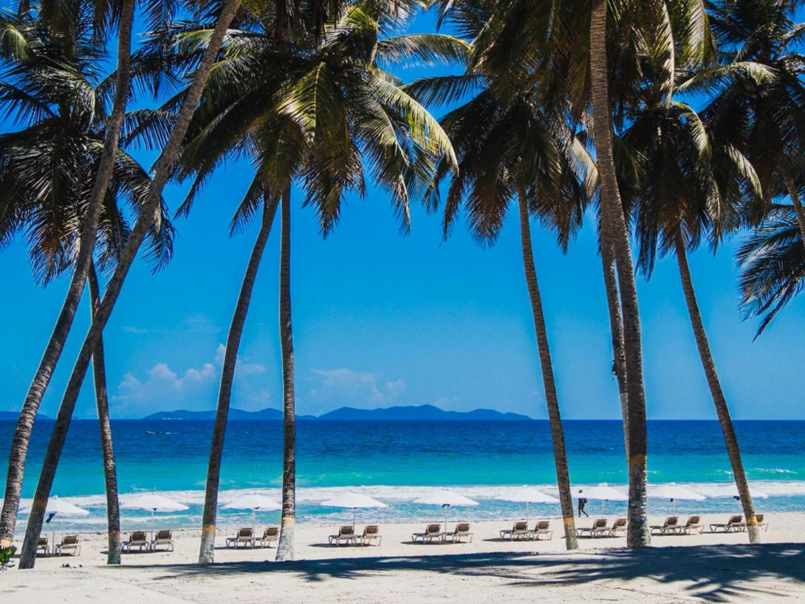

Cómo Llegar
Para llegar a Margarita se debe coger un vuelo desde Caracas.
Las aerolíneas que vuelan a Margarita (el nombre del aeropuerto es Porlamar) son:
Nota importante: Las aerolíneas en Venezuela sacan vuelos con menos antelación que en Europa. Es normal que faltando tantos meses para la boda no se vean resultados en las páginas.
Agencias
-
TitoTur:
- Whatsapp: +58 414 3626882
- Instagram: @titoturca
-
Viajes Mazzocchi:
- Whatsapp: +58 414 8484993
- Instagram: @viajes.mazzocchi
Fiesta de bienvenida
Como nos acompañais desde varias partes del mundo, queremos reuniros a todos el día antes de la boda en Playa El Agua.
Traslados
Los autobuses saldrán el día 16 de Agosto a las 11:30am desde el hotel Tibisay y volvemos sobre las 6:30pm, también al hotel Tibisay.
El lugar
El evento se celebrá en el club "La Playa food & bar"
La Boda
La boda se celebrará en el Santuario del Santísimo Cristo del Buen Viaje el 17 de agosto de 2024 a las 4:00 pm.
Traslados
Habrá salida de autobuses desde el Hotel Tibisay hasta la iglesia.
Recepción
La celebración será en el Downtown Beach Club del hotel Tibisay Boutique tras la ceremonia.
Dress code

Alojamiento en Margarita
La celebración de la boda será en el Hotel Tibisay de Margarita. Por eso recomendamos alojarse en este hotel, donde contamos con un descuento especial.
Reservas
Whatsapp +58 414 188 2167
Código de descuento: Boda Verónica y Pablo
쯈ué hacer en Venezuela?
Algunos de los destinos más interesantes a los que viajar en Venezuela, además de Margarita, son:
- Los Roques
- Canaima
- Caracas
Para viajes a Los Roques o Canaima, pueden contactar con las agencias de viajes mencionadas anteriormente
쯈ué hacer en Margarita?
Restaurantes
- Juana la loca - Fusión
- Portarossa - Italiano
- La mar - Pescado
- La empanadería - Tradicional
- Francelina - Café
Playas
Contacto
Para cualquier cuestión relacionada con el viaje, pueden contactar con nuestra wedding planner.
Caro Odreman: +58 414 7939162
Regalos
Para nosotros lo más importante es que nos acompañeis este día tan importante con vuestra presencia, pero si nos quereis ayudar en esta nueva etapa, lo podeis hacer a través de:
España 🇪🇸
Pablo García Egido
IBAN: ES1800730100570605457789
Bizum: 674 75 62 86
US 🇺🇸
Verónica Isabel Altimari
Zelle: (786) 940-0268